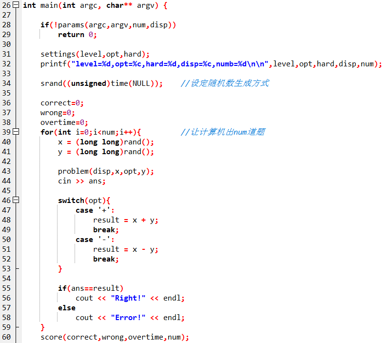

现在你通过命令行可以设置出题的显示方式和每局的试题数了，但一些关键的显示问题仍然没有解决，如横式或竖式的显示问题，得分的显示问题等。
鼠标右击arith项目，选择New File
输入如下程序代码
void problem(char disp,long long x,char opt,long long y){
return ;
}
void score(double correct,double wrong,double overtime,double num){
return ;
}
按Ctrl+s保存
输入文件名display.h点击保存

在main.cpp中增加语句
#include "display.h"
和
double correct=0; //做对题数
double wrong=0; //做错题数
double overtime=0; //超时题数
如下图

在display.h中完善如下函数
void problem(char disp,long long x,char opt,long long y){
switch(disp){
case 'h':
printf("%lld%c%lld=",x,opt,y);
break;
case 'v':
printf("%25lld\n",x);
printf("%c %23lld\n",opt,y);
printf("-------------------------\n");
printf("=");
break;
}
return ;
}
按Ctrl+s保存display.h，回到main.cpp增加如下语句：

按Ctrl+s保存main.cpp，按F12重新构造全部。
进入命令终端，带--disp v运行游戏程序：
F:\a.steam\dreamx\wedo\game\arith>arith --disp v
Please select level([1]-18):
Please select operator([+],-):
Please select Hard([1]-60):
level=1,opt=+,hard=1,disp=v,numb=10
25224
+ 9978
-------------------------
=35202
Right!
在display.h中继续完善如下函数：
void score(double correct,double wrong,double overtime,double num){
printf("right\twrong\tovertime \n");
printf("--------------------------------- \n");
printf("%d\t%d\t%d \n",(int)correct,(int)wrong,(int)overtime);
int score = (correct+overtime*.5) * 100 / num;
printf("\nscore=%d\t",score);
if(score==100)
printf("king\n");
else if(score>=90)
printf("excellent\n");
else if(score>=80)
printf("perfect\n");
else if(score>=70)
printf("ok\n");
else if(score>=60)
printf("low\n");
else
printf("bad\n");
return ;
}
按Ctrl+s保存display.h，回到main.cpp增加如下语句：

按Ctrl+s保存main.cpp，按F12重新构造全部。
进入命令终端，带--disp v --numb 3运行游戏程序：
F:\a.steam\dreamx\wedo\game\arith>arith --disp v --numb 3
Please select level([1]-18):
Please select operator([+],-):
Please select Hard([1]-60):
level=1,opt=+,hard=1,disp=v,numb=3
27879
+ 32145
-------------------------
=3
Error!
23619
+ 27987
-------------------------
=3
Error!
21793
+ 9578
-------------------------
=3
Error!
right wrong overtime
---------------------------------
0 0 0
score=0 bad
F:\a.steam\dreamx\wedo\game\arith>